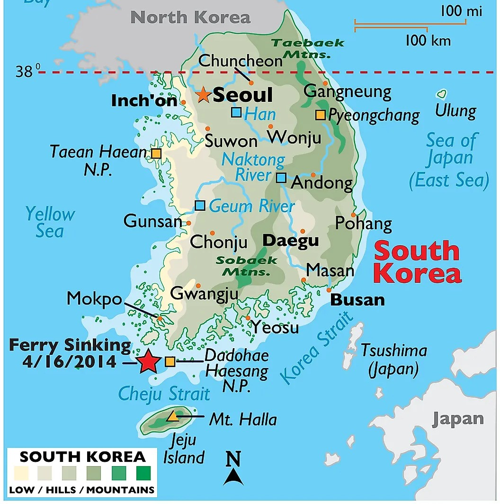

1. Korean Manners and Respect for Age
Koreans place immense importance on respect and hierarchy, particularly regarding age. Bowing is a common way to greet, and addressing someone with the correct honorific is essential.
2. Geography, Politics, and Economy
South Korea is located on the southern part of the Korean Peninsula, bordered by North Korea, the Yellow Sea, and the Sea of Japan. Politically, it is a democratic republic, and its economy ranks among the top 10 globally, driven by industries like technology and manufacturing.
3. Top 10 Most Visited Places and Travel Tips
- Gyeongbokgung Palace
- Namsan Seoul Tower
- Jeju Island
- Busan's Haeundae Beach
- DMZ (Demilitarized Zone)
- Changdeokgung Palace
- Myeongdong Shopping District
- Bukchon Hanok Village
- Seoraksan National Park
- Insa-dong Neighborhood
4. Korean Traditions
Key traditions include Chuseok (harvest festival), Seollal (Lunar New Year), and wearing the traditional clothing called Hanbok during special occasions.
5. Brief History
Key milestones in Korean history include:
- 2333 BC: Founding of Gojoseon
- 918 AD: Establishment of the Goryeo Dynasty
- 1392 AD: Founding of the Joseon Dynasty
- 1945: Liberation from Japanese occupation
- 1950-1953: Korean War
6. Technological Inventions
South Korea is known for its technological giants, including Samsung, LG, and Hyundai. Innovations in smartphones, TVs, and cars dominate global markets.
7. Top 10 Richest Men and Women in Korea
- Jay Y. Lee (Samsung)
- Suh Kyung-bae (AmorePacific)
- Kim Beom-su (Kakao)
- Chung Mong-koo (Hyundai Motors)
- Kim Jung-ju (NXC)
- Seo Jung-jin (Celltrion)
- Kwon Hyuk-bin (Smilegate)
- Lee Boo-jin (Samsung C&T)
- Chung Eui-sun (Hyundai Motors)
- Kim Tae-hee (Actress)
8. Popular Singers and Actors
Some of the most famous include BTS, BLACKPINK, Lee Min-ho, IU, and Song Hye-kyo.
9. Best K-Dramas to Watch
- Crash Landing on You
- Goblin
- Reply 1988
- Vincenzo
- Itaewon Class
- Descendants of the Sun
- Kingdom
- Hotel del Luna
- Start-Up
- Extraordinary Attorney Woo
10. Fun Facts About Korea
Did you know?
- South Korea has the fastest internet in the world.
- Kimchi is a staple in nearly every meal.
- There are more than 5000 islands in Korea.
- Korean age is different from international age.
- Taekwondo originated in Korea.
- South Korea has the highest rate of plastic surgeries.
- They celebrate Pepero Day on November 11th.
- Seoul's subway system is among the best in the world.
- South Korea's gaming industry is massive.
- Koreans are obsessed with coffee.